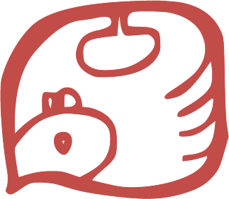
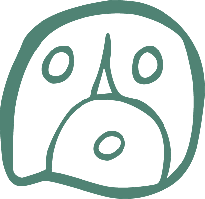

Calendrier
Calendrier
 Fonctionnement
Fonctionnement
 Notes
Notes
 Crédits
Crédits
✉
Commander
Analyse
Analyse

Le tzolk'in, également appelé "compte des jours" ou "calendrier sacré", est l'un des calendriers de la civilisation maya. Originaire de la Mésoamérique, ce système calendaire a été développé il y a plus de 2 500 ans. Son utilisation s'est poursuivie sans interruption jusqu'à nos jours dans certaines communautés mayas du Guatemala et du Mexique.
Contrairement à notre calendrier grégorien, qui suit les cycles solaires, le tzolk'in repose sur un cycle de 260 jours, résultant de la combinaison de deux cycles simultanés : un cycle de 13 nombres et un cycle de 20 glyphes (appelés "nawals"). Chaque jour est ainsi identifié par un nombre de 1 à 13 associé à l'un des 20 glyphes, créant 260 combinaisons uniques. Ce cycle correspond approximativement à la période de gestation humaine et est également lié aux cycles agricoles et astronomiques, centraux pour la civilisation maya.
Les Mayas possédaient une connaissance astronomique remarquablement précise, qui se reflète dans la structure du tzolk'in. Le cycle de 260 jours présente plusieurs corrélations astronomiques significatives : il correspond approximativement à neuf cycles lunaires synodiques (environ 29,5 jours chacun) ainsi qu'à la période de visibilité de Vénus. De plus, les observateurs mayas avaient noté que les passages du Soleil au zénith à la latitude de Copán (environ 14,8° Nord) se produisaient à 260 jours d'intervalle. Le cycle de 20 jours, lié au système vigésimal (base 20) des Mayas, reflète également le cycle des Pléiades, visible pendant environ 260 jours par an sous ces latitudes. Le cycle de 13, quant à lui, pourrait correspondre au nombre de "cieux" ou niveaux cosmiques dans la cosmologie maya. Les Mayas avaient calculé avec une précision stupéfiante les cycles synodiques des planètes visibles, les éclipses solaires et lunaires, et même la précession des équinoxes, un cycle d'environ 26 000 ans. Le tzolk'in s'intégrait dans un système calendaire plus vaste, incluant le Haab (calendrier solaire de 365 jours), pour former le "Compte Long", permettant de suivre des périodes de plusieurs millénaires.
Fait remarquable, les nombres 13 et 20, au cœur du tzolk'in maya, se retrouvent avec une signification similaire dans d'autres traditions culturelles éloignées géographiquement. Dans la tradition celtique, le calendrier lunaire comportait 13 mois de 28 jours, correspondant aux 13 cycles lunaires d'une année solaire. Le nombre 20 apparaît dans leur système de comptage vigésimal, et certains cercles de pierres celtiques présentent des arrangements basés sur ces nombres. Le calendrier oghamique celtique, par exemple, possède 20 signes principaux, rappelant les 20 glyphes du tzolk'in. Chez les Égyptiens anciens, le cycle de Sirius (l'étoile la plus brillante du ciel) était particulièrement important, et sa période de visibilité était d'environ 260 jours par an. Leur calendrier présentait 13 phases correspondant aux inondations du Nil, et leur système numérique attribuait une signification particulière au nombre 20 comme marqueur d'une période complète. Dans la tradition hopi d'Amérique du Nord, on retrouve un système prophétique basé sur 13 cycles majeurs, et leur cosmologie divise le monde en 20 aspects fondamentaux. Cette convergence numérique entre cultures, apparemment sans contacts directs, soulève des questions fascinantes sur l'universalité potentielle de certaines observations astronomiques ou sur des intuitions mathématiques fondamentales communes à l'humanité.
Les 20 glyphes du tzolk'in représentent des forces ou énergies spirituelles fondamentales qui influencent chaque jour selon la cosmogonie maya. Chaque glyphe possède ses propres caractéristiques, son symbolisme et sa signification spirituelle. Ils sont représentés par des symboles visuels complexes qui évoquent des éléments naturels, des animaux ou des concepts abstraits : Imix (Crocodile), Ik (Vent), Akbal (Nuit), Kan (Maïs), Chicchan (Serpent), Cimi (Mort), Manik (Cerf), Lamat (Étoile), Muluc (Eau), Oc (Chien), Chuen (Singe), Eb (Herbe), Ben (Roseau), Ix (Jaguar), Men (Aigle), Cib (Vautour), Caban (Terre), Etznab (Silex), Cauac (Orage) et Ahau (Seigneur/Soleil). Ces glyphes déterminent la nature fondamentale de chaque jour et sont considérés comme des portails permettant de communiquer avec différentes dimensions de l'existence et des divinités spécifiques.
Dans le tzolk'in, les 13 nombres ne sont pas de simples indicateurs quantitatifs, mais possèdent une signification qualitative et spirituelle profonde. Chaque nombre de 1 à 13 représente une intention, un être ou une direction d'énergie particulière : le 1 symbolise l'unité et l'initiation, le 2 la dualité et la polarité, le 3 l'activation et le mouvement, le 4 la stabilité et la mesure, le 5 l'harmonie et le centre, le 6 l'équilibre et le rythme, le 7 la réflexion et la méditation, le 8 l'harmonie et la justice, le 9 la patience et la persévérance, le 10 la manifestation et l'accomplissement, le 11 la dissolution et la libération, le 12 la compréhension et la stabilité, et le 13 l'ascension et la transcendance. Selon la tradition maya, chaque nombre module l'énergie du glyphe auquel il est associé, créant une dynamique unique pour chaque jour du calendrier. Ces nombres sont également liés aux treize articulations majeures du corps humain, établissant une connexion entre le macrocosme et le microcosme.

Les flèches ◀ ▶ naviguent jour par jour. Clic sur la date → saisie libre (naissance, événement…). ↺ revient au jour actuel. Chaque élément est cliquable — glyphe, chiffre, trécéna — et ouvre une page de description.
Sous le calendrier, le cadre coloré indique la famille de maïs K'iche' du jour — Rouge (Est), Blanc (Nord), Noir (Ouest) ou Jaune (Sud). Cliquez dessus pour accéder à la page de la famille : Popol Vuh, élément, les 5 nawals K'iche' et les cérémonies associées.
Carte personnelle depuis votre date de naissance — cinq dimensions : Centre naissance · Est conception · Ouest mission · Nord guide · Sud soutien. Plus le Seigneur de la Nuit G1–G9. Chaque position est cliquable. Accessible depuis « Jour important pour » ou depuis le bouton ✛ dans Profils.
Choisissez une émotion dans la roue de Plutchik et écrivez librement. Enregistrement automatique. Possible pour un jour passé (date, heure et lieu confirmés, ville pré-remplie par GPS).
Joie ·
Sérénité · Extase
Tristesse
· Songerie · Chagrin
Peur ·
Appréhension · Terreur
Colère ·
Contrariété · Rage
Surprise ·
Distraction · Stupéfaction
Confiance
· Acceptation · Admiration
Dégoût ·
Aversion · Ennui
Anticipation
· Intérêt · Vigilance
Historique complet, filtrable. Téléchargez en CSV, TXT ou PDF. Réimport CSV possible. Sauvegarde automatique annuelle — conservez-la précieusement.
Enregistrer pour un autre jour : naviguez jusqu'au jour souhaité dans le calendrier, ouvrez les Notes — une confirmation de date vous sera demandée avant de saisir heure et lieu.
Édition depuis Enregistrés : chaque note est entièrement modifiable — texte, heure, lieu. Le bouton 📍 active le GPS pour remplir automatiquement votre localisation si la permission est accordée.
Analyse personnalisée
Analyse de votre année TzolkInSight à partir de votre .csv (aucun intérêt s'il n'y a pas assez de données — minimum 100 à 150 entrées sur une année) : récurrence des glyphes, tons, trécénas, transits, cycles, psyché jungienne… 50 € / rapport.
A envoyer à : tzolkinsight@leparede.org

Gérez vos contacts pour la Croix Maya. Enregistrez autant de noms et dates de naissance que vous le souhaitez, choisissez une couleur. Pour chaque contact : Modifier, Supprimer, et le bouton ✛ ouvre directement sa Croix Maya.
C'est ici aussi que vous configurez un code PIN optionnel pour protéger vos notes.
« Connais-toi toi-même et tu connaîtras l'Univers et les Dieux »


Calendrier Maya Sacré
Version 1.1.4
leparede.orgCette app est gratuite et sans publicité.
Si elle vous apporte de la valeur, vous pouvez soutenir son développement librement.
Calendrier
Fonctionnement
Notes
Crédits